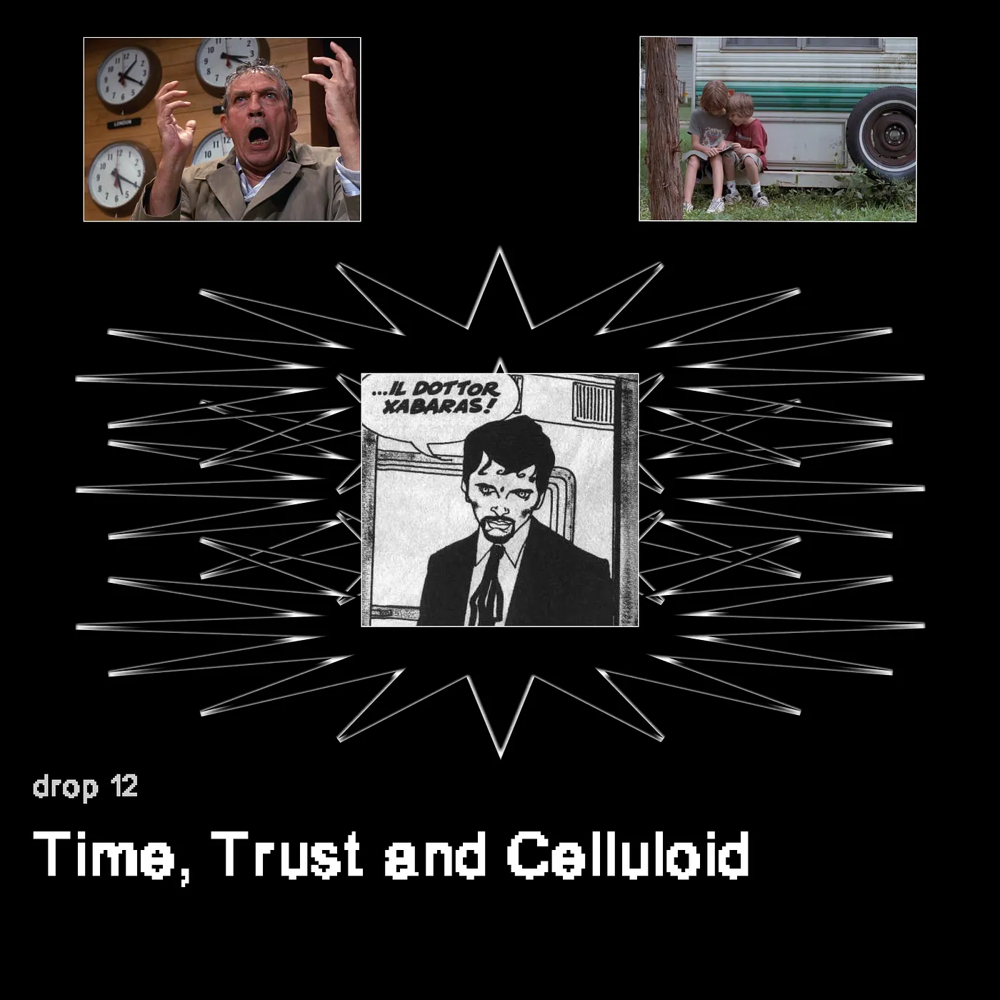
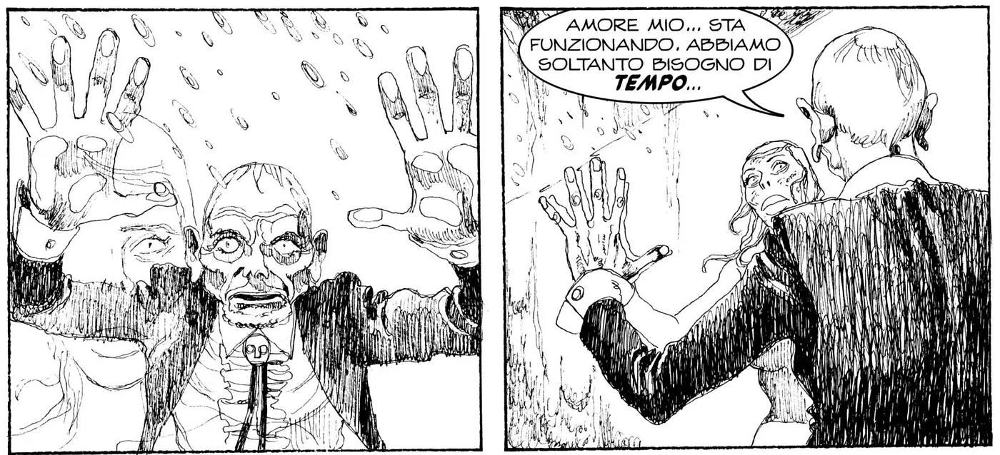
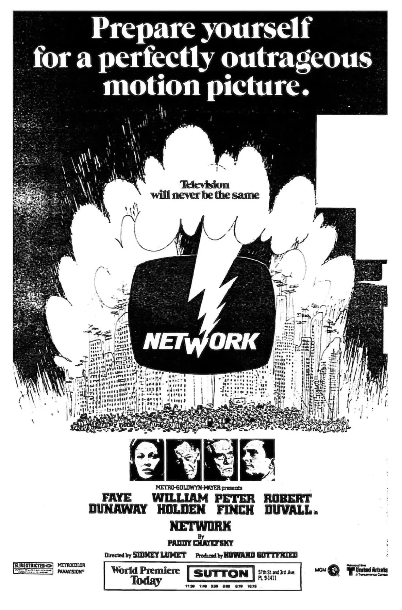
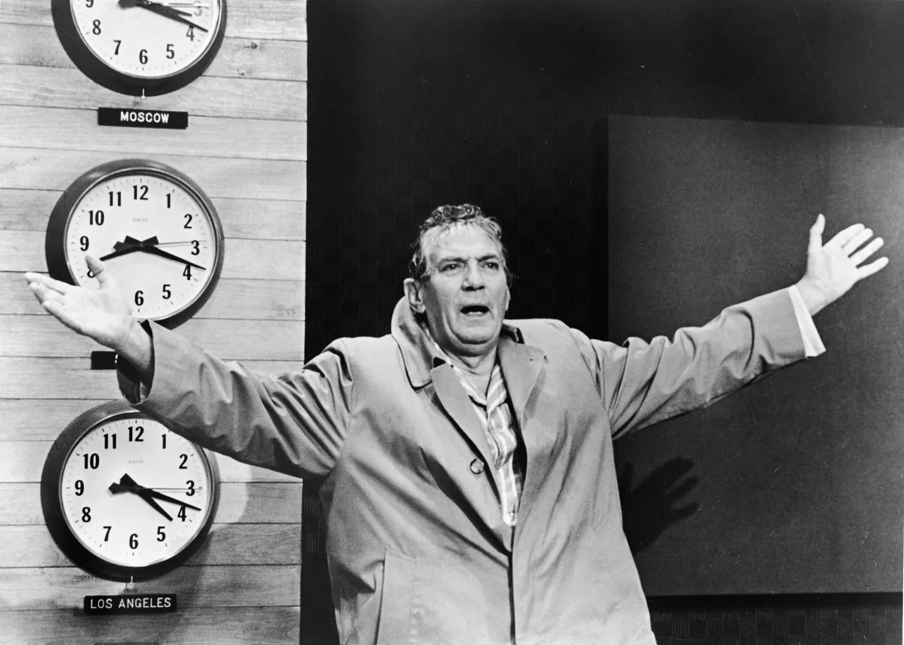
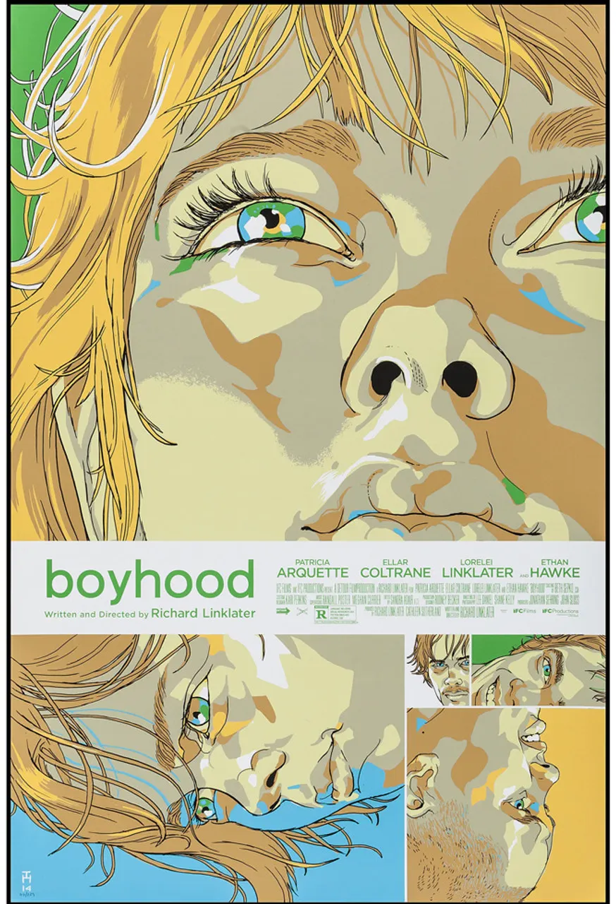
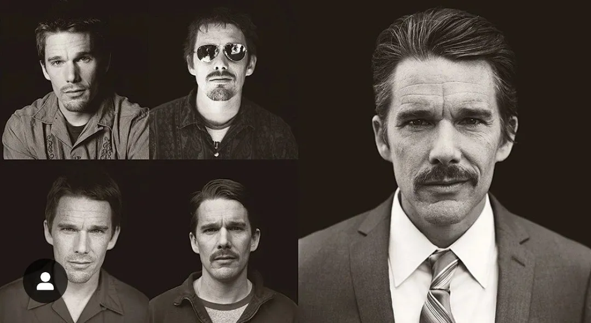

Drop #12 · February 23, 2024 · 18 min read
Hey everyone (▰˘◡˘▰)
We continue the stream of our open call results, venturing into new realms. Today Alessandro Barbetti delves into the intricate relationships between trust, time, and media through an analysis of two distinct cinematic works: "Network" and "Boyhood." By examining how these films manipulate temporal narratives and engage viewers in trust-building processes, Alessandro unveils the complex dynamics underlying audience-media interactions. Although focused on cinema, this text resonates with the issue of trust in digital society explored by our authors.
Alessandro Barbetti was born in 1997 somewhere in Tuscany but hopes to die somewhere else. His motto is expressed in the movie Toni Erdmann: "How good is doing nothing all day, and finally rest". He has studied Communication between Bologna and Milan, became passionate about semiotics, savvy about motion pictures and addicted to photography, Internet culture, and countryside landscapes. If he's not acquainted with something, he writes about it.

by Alessandro Barbetti
During my high school years (liceo classico in Italy, where humanities are privileged), one day I was asked to translate a short extract from Cicero’s De Senectute (“On Old Age”). As every good Roman orator, Cicero couldn’t avoid playing with rhetoric, forging an expression for the books: nihil morte certius, aside from death, there is no sure thing.
I was seventeen then, not a brilliant student but already equipped with a photographic memory, which retains fragments or impressive life episodes. Reading De Senectute was one of them: not so much because I was afraid of dying, but because I started realizing death is not something that can be objected to. It’s the ultimate destination for every one of us. But, according to Cicero - a true Epicurean - it shouldn’t be perceived as a looming terror. De Senectute is a work on self-care, on moral philosophy, but mostly it’s a work on getting old. It’s Cicero’s last gift, written just a couple of years before dying and intended for all who are afraid of aging. For those, De Senectute discloses the secrets of how to live well in senility, how to trust themselves more, and how to take care of minds and bodies.
The radical certainty of death unfolds a series of thoughts on the passage of time: a small contribution to this reflection lies in an Italian graphic novel, a minor work within the Dylan Dog Universe (Dylan Dog - Il pianeta dei morti - Nemico pubblico numero 1). In this spin-off, the world has been invaded by the undead, and the eternally young protagonist Dylan Dog, one of the most long-running characters amongst Italian comic characters, must face his old age. His incredibly old enemy (who is also his father), reappears to confront the protagonist in one last bloody and grueling battle, after a lifetime spent searching for the elixir of eternal life, It is on this occasion that Xabaras, that’s his name, (an anagram of Abraxas, the gnostic divinity) offers the reader a lesson on the way we tend to think about time past and the time we have left, the future:
"Have you ever wondered why, in life, it feels like time goes by faster and faster? It's not a feeling... it is the truth! We perceive time by what we can compare it to. If you have four weeks to live, a week is a quarter of your life... if you have twelve months, a week becomes a fiftieth of your life. The longer we live, the smaller a year becomes... and therefore short. After thirty years, each year will constitute less than three per cent of the whole life. But we can fight time!"

However, Xabaras' romantic dream is doomed to be shattered and the Faustian myth of man against physical and mental decay degradation is revealed in time for what it is: a myth.
This reflection, however, raises some questions. The deeply opposed visions of Cicero's and Xabaras have a common object, namely the passage of time - or diachrony - and the tools that can come in handy to deal with it: a pill for old age from the Latin orator, an elixir for youth from a mad scientist are nothing more than means to acquire and continue to regain certain confidence in the face of unrelenting change.
The idea of diachrony shapes a scientific perspective and method derived from linguistics, by which one attempts to analyze one or more objects over time to determine their evolution. It is a fruitful approach used not only to deal with linguistic phenomena but also with visual anthropology, semiotics, and cognitive sciences. Diachrony - the passage of time itself - is also related to the development of trust in other people, institutions, or pieces of media.
The malleability of the concept of diachrony is an essential dimension of human and social phenomena, that allows us to raise some additional questions and to try to understand the relationships that are woven between an object of investigation and the passage of time, between the trust that those who experience it have in it and every second on the clock that shapes it, destroys it, modifies it, puts an end to it or gives it a new beginning.
If it is true that diachrony is a characteristic that pre-exists and attaches itself to an object we experience, in this case, media content, then we can draw a parallel with the notion of intermediality. As Eric Mechoulan puts it:
"The prefix inter is intended to highlight an unnoticed or obscured relationship, or, even more, to support the idea that the relationship is in principle primary [...]"
The temporal relationship between the different parts of a discourse, a text, or any media object is often taken for granted: after all, if we take any feature film as an example, it starts at time A and ends at time B. However, in the course of this passage of time, a whole series of events occur in which emotional states, reflections, and points of view develop; in general, there is always an exchange, and without its diachronic dimension all this would not be possible.
If it is true, then, that intermediality and diachronicity are two main and necessary dimensions, and that trust is a fundamental gesture without which we cannot relate (or would not relate too well) to media forms and content, then we are faced with this triad and are entitled to ask: how do these three terms interact? How do they triangulate different interactions with a media piece? Let's have a look at two films that do justice to 'time' and that reveals to us how the potential viewer must be able to trust the twenty-four frames per second they are watching.
Network! or How I Started Worrying About Television

Trust is not an easy concept to articulate, as it has a paradoxical, dual aspect: it is the foundation of human interaction and at the same time it can act as a crowbar that unhinges the nails needed to secure a human relationship. On the one hand, it has to compensate for any lack of skills, knowledge, competencies, or the presence of uncertainties, social anxieties, irreconcilable burdens (in a bar, if I want to drink a cocktail, I will have to trust the bartender who prepares it for me, and hope that he does not cook me a cordon bleu, or spit in my cup); on the other hand, it can have a destabilizing effect if it clashes with certain certainties that we are used to taking for granted. Trust is indeed a sense-making tool to navigate situations and reduce their always-increasing complexity,
Unravelling is not an easy task and transparency is, in most cases a chimera. This is why, when faced with it, we often feel a sense of distance: the same thing that probably happened to viewers of the film Network (1976), written by Paddy Chayefsky, when it was released in the 1970s.
The film recounts the parable (or rather, the rollercoaster) of Howard Beale, a television news presenter who, after learning of his imminent dismissal due to low ratings, announces that he will commit suicide live on the forthcoming show. The broadcaster does everything to get him fired as soon as possible, but Beale surprises everyone with a rancorous speech that becomes the most famous scene in the film:
“ [...] we sit watching our TVs while some local newscaster tells us that today we had fifteen homicides and sixty-three violent crimes, as if that’s the way it’s supposed to be. We know things are bad – worse than bad. They’re crazy. It’s like everything everywhere is going crazy, so we don’t go out anymore. We sit in the house, and slowly the world we are living in is getting smaller, and all we say is: ‘Please, at least leave us alone in our living rooms. Let me have my toaster and my TV and my steel-belted radials and I won’t say anything. Just leave us alone.’ Well, I’m not gonna leave you alone. I want you to get MAD! “
As Baier points out, trust is built upon the willingness to allow others to take care of something significant to the person placing their trust in them. This practice of caring for something includes the exercise of discretionary powers, which develop gradually. In our case, the dimension of intermediation seems to be the necessary framework for establishing this relationship of trust. The newsreader, in fact, from being an authority figure, a theoretically 'superior' figure in terms of knowledge of information and facts, ceases to be such and appears as the ordinary, everyday, frustrated man who wants to exorcise his anxieties.

The paradoxical effect is that both the intradiegetic viewers (the surge in television ratings) and the extradiegetic ones (i.e. us) establish a new relationship of trust that stems from the rupture of a former one. It is thrown in our faces that the commentator only plays a role, similar to that of a puppet, and therefore can no longer be trusted: the power relationship is disarticulated and his authority is undermined. But another immediately emerges: the man who lives in the commentator's 'matryoshka' comes out and addresses us directly. It is no exaggeration to say that this fusion of the television / telegenic and film dimensions has the effect of strengthening the relationship of trust we establish with Howard Beale.
Cinema, as in many other cases, explicitly cannibalizes a medium and shapes its forms, preserving some and demolishing others. We are still in a television studio, but the staging of television itself no longer exists: we are faced with a pure rage that unmasks all the hypocrisy of the formalities of television information. This unmasking is nothing but a further piece added to the mosaic of trust we feel towards our protagonist: we feel like he’s telling the truth.
His parable begins in the first frame and takes real and tangible form when he announces his suicide live on air. From this apparent point of no return, of rejection of self-care and the futility of his role, Howard Beale exorcises all the viewer's insecurities and fears within a week. During this time, he moves from suicidal mania to a clear and pure rage, which reveals a healing purpose for those who follow him.
Network! utilizes and amalgamates more media artifacts (TV sets, newspapers, movie operators) to strengthen its impact in a way that it’s impossible to overlook.
The characters that emerge from the movie have a network of relationships with politicians, industrialists, and people from worlds other than television. The substantial lack of transparency of this world is laid bare by the camera directed by Lumet and the messianic attitude of the character played by Peter Finch.
Howard Beale shakes us out of our cradle to allow us to get up close and personal with a veritable puppet show that pretends to be objective and neutral, crystallized only in appearance, but instead has its own temporality, changes clothes as the days go by and continually makes new decisions. Of course, some might say: what about the process of creating the film, which is hidden from the viewer himself? Is it not a contradiction to attack a manipulative world through a manipulative work, namely cinema? The answer is that the intention of the film is not to present itself as a “pure”, innocent alternative to the television or film industry, but only to reveal the processes behind it. It is up to the viewer to become aware of this: one of the best ways to do this is to find someone to whom they can entrust this dangerous path.
Youth in Real Time: Boyhood

Communications experts and renowned manuals always talk about communication in terms of strategy, mimicking military terms. Mad Men’s-like publicists or online ADS aim to mobilize certain feelings in the viewer, from sympathy, to trust, to affection to achieve a specific - often commercial - goal. Cinema, I believe, functions differently. Movies have the capacity of producing trust for the viewers but this can happen as a kind of side effect of the moving image. In other words, the film is able to create a relationship of "faith" without this being the goal of the author and the work itself. In some respects, the epic indie opus Boyhood falls into these terms.
Released in theaters and the festival circuit in 2014, Linklater’s movie is a true epopea that carries us with a calm and heartfelt gaze on a journey spanning some 12 years (from 2002 to 2014) in which we follow the events of Mason, his family, and acquaintances in the city of Houston.
The director Linklater has relied on an intentionally long creative process (originally called The Twelve Years Project): the dimension of diachrony is much more explicit here, and narrative time, in parallel with story time (i.e., the historical period in which the film takes place) plays a key role. [...]
One element, in particular, should be noted to understand the film's effectiveness, namely the blatant absence of the story: despite the fictional dimension of the work, there is no dramatic plot to justify the progression of the work, but rather a simple depiction of the inertia of life, a willingness to show time as an end in itself. The editing provides no explicit clues or signs that make the viewer aware of the passage of one or more years: in this case, Linklater can be said to leave a certain degree of autonomy to the viewer, acknowledging his intelligence and intuitive human experience, capable of perceiving the passage of time.
In this realist framework, the media cannot help but appear to fully describe a historical period and the cultural climate of the time. Their appearance is certainly even stronger for viewers who lived through that period. The reference and representation (sometimes only implicit) of cultural and media objects of the period is not sporadic, but always present from time to time. Posters, television programs, dialogues of musical groups, and songs of the time are just some of the examples of real media that appear throughout the film.
Once again, we see the media outside and inside the theater as fundamental and indelible elements of the cinematic experience. Their evolution over time contributes to the realistic style intended by the author and provides further symbols of the changing times, as well as, of course, the growth and aging of the characters. Let’s ask ourselves what would have been the effect of the film if we had noticed that the protagonists were slowly aging without being surrounded by various references to other media(such as music, cinema, theater, and television).
There is no unambiguous answer, but we certainly cannot say that the viewer would have been able to develop the same degree of identification. Identification is certainly a key element when talking about trust in media objects. Yet, as Tan points out, this is an exception in mainstream movies.
Boyhood’s method of identification is reminiscent of the childhood, adolescence, and early adulthood experienced by many young viewers. Paul Ricoeur's words on narrative art shed light on this dynamic: "[It consists] in interweaving the world of fiction and the introspective mode, in mixing the perception of the everyday with that of interiority".
The viewers are not pushed away and crushed by the events of the film, just as they’re not involved through what Aristotle called the "explosion points" of a narrative. They are slowly affected precisely through the pieces of this mosaic that are completed and evolve over time in the most natural way possible. The real artificiality of the film lies in the fact that it condenses 12 years into 165 minutes: yet the images manage to compensate for this interpolation with a real repertoire of references. From this ground up, the possibility of interaction and identification with the characters becomes complete and satisfying.

This trust is also reflected in the relationship between the director and the actors: as is often the case in long-running television series, in Boyhood the performer and the character tend to merge (Jackson, 2015). Thus, Mason's character develops parallel to - and in response to - Ellan Coltrane's interests in real life. Linklater stated that after having Coltrane play, he thought of making Mason a musician because he was a musician. Mason's interest in photography was much so that it directed him toward some college choices incorporated into the film as a direct response to Coltrane's fascination with the medium.
Conclusion
The manipulation of time is an indispensable component of cinema itself. Fellini said: "We are built in memories, which together constitute childhood, adolescence, middle age and old age." One of the special powers of cinema is to give the illusion of movement, to cut and reshape this linear process that is nothing but the flow of individual life. The trusting relationship we have with the moving image is, in a sense, an extension of the one we have with photography.
As Roland Barthes argues in La Chambre Claire, photography demands from the viewer a specific state of presence and absence, the feeling of "having been there," that is, it keeps the viewer in a tense structure between the "being there" of the photograph and the absence in the photograph (as an external subject and observer of the photograph itself). By extension, the reality-recognition effect of the moving image derives not only from its iconic features but also from this "tension" in which the viewer finds himself, a "here and now" that is at the same time a "there and then": the audiovisual experience involves different space-times that make possible the meaning effects of cinema.
Both Network and Boyhood reveal this tension between "being now here" and "then there". A tension that is never fully resolved, but that through specific modes of temporal representation are left to the viewers’ interpretation, who can decide whether or not to lend themselves to a trusting relationship with what they experience. Diachronicity alone probably does not ensure or guarantee the viewer's willingness to engage with the moving image.
However, I do not think it is a coincidence that the current golden age of television series is unfolding starting from similar premises. They are, after all, media artifacts that have taken a few "lessons" from cinema and have exploited a fundamental characteristic that cannot be granted to any feature film: they can evolve for years and years, whereas movies would not be enjoyable in the same way if they lasted more than 25 hours. Television series, in most cases, follow the evolution of a story that unfolds over time and, if they are a good product, they do so for the long term; cinema, on the other hand, is forced to compress its content into a much shorter duration. Seriality is just another way of saying diachronicity and fidelity to a television series is a direct consequence. An indefinite number of episodes, however, scattered, allows viewers to benefit from many more types of "tension" than a single film.
Not only consistency across time but also the ability to give the viewer at least a plausible impression of the chronological flow can make a difference. The fascination with the evolution of something over days, weeks, or years is the direct result of an additional tension, between the constant "here and now" from which we cannot escape (and which moves us inexorably forward) and the atavistic desire to be able to manipulate the succession of events. The success of video as the most popular medium of communication in human history should not be interpreted (only) as the result of a specific technological development, but also as the possibility, now within everyone's reach, to be a small temporal "demiurge" and to monitor and shape changes. The observation and voyeurism of these changes within a specific medium, as in the case of Boyhood and Network, responds precisely to this desire: to find spaces in which to build one's relationship and trust with characters, places, and worlds that offer the prospect of change, of never being the same as the moment just before and the moment just after. A continuous exchange made possible by every millisecond that ticks on the hands.